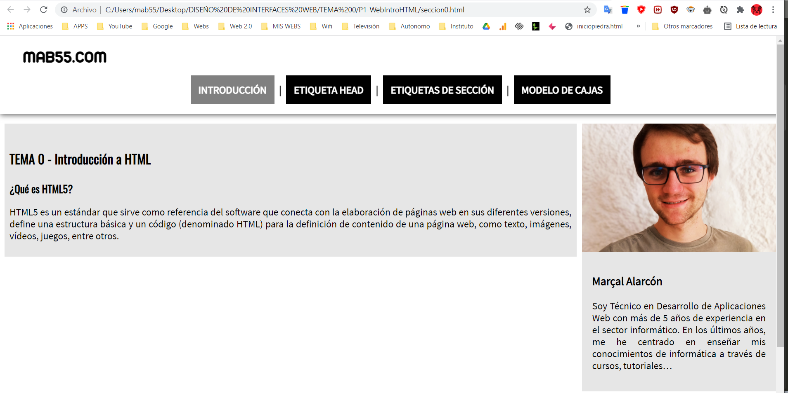
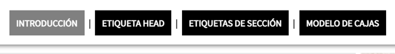

¿Qué es una guía de estilo?
Una guía de estilos es un manual, donde definimos la identidad de la marca, sus colores, la tipografía, el tono… Es decir, todos los elementos para construir una imagen sólida de nuestra marca.
PARTES GUÍA DE ESTILO
En una guía de estilos debemos de definir:
- La marca
- Los colores
- La tipografía
- Los iconos
- Las imágenes
- Los controles de formulario
- Los elementos de interfaz
- El tono
Ejemplo de guía de estilo
Por ejemplo voy a realizar una guía de estilo de la web de tema 0.
La marca
Mab55 es una marca enfocada en el desarrollo de aplicaciones y enseñanza web. Especializados en formar a miles de alumnos para que sean auténticos webmasters.
La tipografía
La tipografía que he usado para la web es sans-serif, es decir sin remarcado. Para así darle una mayor legibilidad a los textos del sitio. La fuente principal que he usado se llama Source Sans.
El color
En mi caso he buscado colores complementarios y sencillos como el blanco y el negro. Una típica combinación simple pero que le da al sitio seriedad y profesionalidad.
El tono
El tono que doy en mi sitio web es muy cercano, puesto que me interesa transmitir confianza y seriedad para que los clientes compren mis cursos.
Las imágenes
Las imágenes en mi sitio son fundamentales, con ellas soy capaz de aclarar algún ejemplo que no queda muy claro con el código o simplemente presentarme poniendo una foto mía, así doy mucha más confianza a los usuarios nuevos de mi sitio web.
Los controles
Los controles en un sitio web son fundamentales para la buena navegación del usuario, es por eso que he decidido crear un menú superior con las diferentes secciones del tema.
También he querido añadir un efecto “hover” cuando pasas el ratón por encima de los elementos. Así le doy al usuario una mayor sensación de navegación por el sitio web.